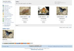
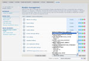
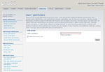

Introduction
Welcome to the phpBB3 and Gallery integration. This integration package is part of the ongoing effort to seamlessly integrate Gallery 2 in phpBB3. There is no need for users to register and login to two seperate applications. They simply register and login through phpBB3 and the integration automatically creates accounts in Gallery for them if they don't have one. Users registered and logged in to phpBB3 are automatically registered and logged in when they visit Gallery 2 through the integration. Think of it as having Gallery 2 built in as a part of your phpBB3 installation.
Please read through this document carefully before attempting to integrate Gallery 2 into phpBB3 and before asking for help. We have taken care to try to answer as many of your questions here as possible. If you don't read this and have problems, we may refer you back to this document as a first resource.
Description
This package contains all the files, directories and modification instructions you will need in order to integrate Gallery 2 into your phpBB3 website.
What This Package Does
Simply put, this package allows you to integrate Gallery 2 into phpBB3. Among it's many features, it:
- Creates a Gallery 2 link in the forum pages.
- Creates a Gallery 2 integration administration module in the phpBB3 Administration Control Panel.
- Allows you to export your existing phpBB3 users and groups to Gallery 2.
- Automatically maintains synchronization between phpBB3 and Gallery 2 user databases.
- Allows users to link Gallery 2 images directly into phpBB3 posts using several different options.
- Has the capability to add Gallery 2 links and features in your users posts and profiles.
{kind=link}

{kind=link}
{kind=link}
{kind=link}
{kind=link}
{kind=link}
{kind=link}
Requirements
This mod requires:
- phpBB3rc7 or higher be installed and running and you must have access to the adminisitration control panel.
- Gallery 2.1 or higher be installed and running in standalone mode and you have administrative privileges.
- Files be added to phpBB3.
- Existing phpBB3 files be modified.
- Files be added to Gallery 2.
- Existing Gallery 2 files be modified.
- Access to your phpBB3 database and the ability to directly execute SQL queries on it.
- A general knowledge of phpBB3 and Gallery 2 so you know what the integration is all about and what it is attempting to do.
If you are unsure about doing any of the above yourself, then you should probably stop now and seek the advice and help of someone who has more experience with this sort of thing. You've been warned!
Core Installation / Configuration
This is a fairly complex mod. You are going to need approximately two hours to devote to this integration in order to carry out all mods from start to finish and properly setup the integration. If you have done mods on phpbb before, you should not have much trouble with it. However, if you have not performed mods on phpbb before, this is probably not the best one to start out with.
NOTICE
This integration package does not install or configure Gallery 2 for you, and it does not install or configure phpBB3 for you. Before you proceed with this integration, you must install and configure Gallery 2 and have it working in stand alone mode and you must install and configure phpBB3 and have it working and be able to access the administration control panel.
NOTICE
Back up all files related to Gallery 2 and it's associated database, then backup all files related to phpBB3 and it's associated database. If you fail to take this precaution and things get screwed up later, then it will be your own fault!
NOTICE
Regarding easymod, it is recommended these mods be carried out by hand. It is not garaunteed that easymod will be be able to process all of these mods correctly. Because:
- The integration has not been tested with easymod.
- The # sign is a valid .css character and it is the comment character for phpBB mod files.
- Directories named 'local' need to be created in the gallery themes templates directories and files copied there.
- There are mods to Gallery 2 files that normally reside outside of the phpBB directory.
- The entire g2image directory needs to be copied to the phpBB3 directory.
If you insist on using easymod, it will be up to you to ensure that all mods are carried out correctly and you do so at your own risk!
IMPORTANT
The use of the Gallery 2 rewrite module in an integrated environment has proven to be a tricky task. It is highly recommended that you deactivate the Gallery 2 rewrite module prior to attempting this integration. You can reactivate the module after everything is working with the integration.
So, let's get on with it! The mods have been broken into pieces relevant to different aspects of the integration so you don't have to wade through one huge mod file all at once. Just be aware that the integration will not function properly until you have made it through all of the ten installation and configuration steps. The following are the 10 step by step installation and configuration instructions.
Step 1: Gallery Theme Mods
a) Open gallery2_mods.txt and perform all the mods contained in this file or at least perform the mods for the Gallery 2 theme that you intend to use. They can all co-exist together. It is recommended to install all the theme mods, then you can switch between them, unless you are certain you will only be using one theme or another. These mods are optional as far as the integration function is concerned, but it is requested they be carried out so that nukedgallery.net can be recognized as the source of the integration package.
{kind=link}
Step 2: Core Integration Mods
a) Open integration_mods.txt and follow the instructions from start to finish in this file. All of these mods are required for the integration to be fully functional.
b) Execute the SQL queries on your phpBB3 database. There must not be any errors returned from your database server or you will have to sort them out for the integration to be successful.
c) Copy the included files to the appropriate phpBB3 directories. All of these files are required for proper operation of the integration.
d) Skip the DIY instructions for the moment. (We will return to these after the rest of the mods are carried out.)
e) Perform the phpBB3 file edits as specified in the remainder of the integration_mods.txt file. All of these mods are required for proper integration operation.
Step 3: phpBB Style Mods
a) You must now decide if you are going to use the prosilver style or the subsilver2 style or install both style mods and be able to switch between the two styles. (prosilver_mods.txt and/or subsilver2_mods.txt) They can both co-exist together. It is recommended to install both style mods unless you are certain you will only be using one style and not the other. If you install one style and then switch to the other without installing the appropriate mods for that style, the integration will be broken. If you will be using a style other than the two default phpBB styles, you will have to find and make the appropriate changes yourself. Use the included style mods to see where and what needs to be changed for the integration to work in your chosen style.
{kind=link}
Step 4: Add Gallery Module
a) Returning to the integration_mods.txt file DIY instructions, start up a web browser and make your way to the phpBB3 Administration Control Panel, then click the 'SYSTEM' tab. Click 'Administration Control Panel' under 'MODULE MANAGEMENT' in the left hand pane. Then click 'General' under 'Module management - ACP' in the center pane. Then click 'Board configuration' under 'Module management - ACP -> General' in the center pane. Now in the 'Add module' drop-down-box select 'Gallery2 Settings' and then click the 'Add module' button. Select 'Yes' at the confirmation screen. Then click the 'Back to previous page' link and select 'Enable' at the 'Gallery2 Settings' options. The Gallery2 acp module should now be installed and enabled.
b) Now select the 'GENERAL' tab under 'BOARD CONFIGURATION' in the left hand pane select 'Gallery2 Settings'. This should take you to the main Gallery2 integration administration options page. You must execute certain portions of these settings in order for the integration to function properly.
{kind=link}
{kind=link}
{kind=link}
{kind=link}
Step 5: Configuration Settings
a) Click the 'Configure Settings' button to setup the basic integration settings. These settings are essential to the core operation of the integration.
b) Configure the 'URL path to the gallery2 directory:'. This value is the web address of your Gallery 2 installation. It can be either a full web address or an address relative to the webserver DocumentRoot address. A full web address would be something like http://example.com/gallery2/. Or it can simply be a root relative address such as /gallery2/. If your Gallery installation is running on a url path that is different than your phpBB3 url path, you should enter a full web url address, or if it is running on the same url path, you may just enter the relative path. The default setting for this is '/gallery2/', if yours is different then you must change it accordingly.
Example:c) Configure the 'URL path to gallery2.php:'. This value is the web address of your integration installation. The integration scripts will attempt to determine this setting automatically. As with the previous setting, this can either be a full url address or a relative address as in http://example.com/phpbb/gallery2.php for a full address, or just /phpbb/gallery2.php for a relative address. This is the address to your phpBB3 directory and then the file name gallery2.php which is the primary Gallery 2 embed handling file.
Example:d) The 'Full file path to embed.php:' setting will be automatically detected by the configure script when you hit the 'submit' button. This may fail if you are using aliased directories for Gallery 2 and phpBB3. This will also fail under certain web host configurations as well. You should at least try this with the field empty the first time around. If the automatic discovery fails, then you will have to enter the real value here yourself. This is a real file path to the gallery2/embed.php file, not a url path. An example might look like 'C:/htdocs/gallery2/embed.php' for a windows server. Use whatever is appropriate for the operating system your server is running on. It is normal for this setting to be blank until after you hit the 'submit' button for the first time and it will remain blank if the automatic detection fails.
Example:e) The 'Active Admin ID:' is critical to almost all functions of the integration. This value will be automatically generated and managed by the integration package when the initial user export is executed. It is provided here in case something goes wrong with the integration and this setting needs to be manually adjusted. Do not change it unless you are certain you know what you are doing! Entering a bad value here will adversely affect the integration. It is normal for this setting to be blank until after you run the user export function for the first time.
Example:IMPORTANT: You must click 'Submit' on this page even if you don't change anything!
{kind=link}
{kind=link}
{kind=link}
{kind=link}
Step 6: Main Gallery Module Menu
Under 'BOARD CONFIGURATION' in the left hand pane select 'Gallery2 Settings' again and this should take you back to the main integration administration options page.
Step 7: Synchronize Users
a) Click the 'Synchronize Users' button to export your phpBB users to Gallery. This must be run at least once as this is when the integration will determine who the admins are in phpBB and create accounts for them in Gallery, create the phpBB guest account in Gallery, and create any existing phpBB groups in Gallery. Also, the first run will allow the integration to fill in the 'Active Admin ID' described above in Step 5e above.
b) If there are no Gallery users that do not exist in phpBB you will only have two choices at this point and you can skip the rest of this step (7b), however, if you have existing Gallery users that do not exist in phpBB, you will have more options to consider. Existing Gallery users will be listed in a table with four choices each that will determine what happens to them during the user synchronization.
- 'Import To PHPBB DB': This option will create an account for the Gallery user in phpBB, thereby maintaining synchronization in the two user databases. One caveat to this approach is that the password stored in phpBB will be the same as the user name because of the different password encoding schemes used by phpBB and Gallery and these users should change their passwords upon login to phpBB. (You will have to inform them of their password.) If you wish to keep the Gallery users, this is the recommended option.
- 'Delete User, Delete Items': This option will delete the Gallery user and any Gallery items (albums, photos, etc.) belonging to the user.
- 'Delete User, Keep Items': This option will delete the Gallery user, but keep any Gallery items (albums, photos, etc.) belonging to this user. In order to keep the items, they must be reassigned to a new owner. The integration will search for the first Gallery admin and the items will be assigned to this admin as the new owner.
- 'Leave As Is': This option simply leaves the Gallery user untouched. This is the least recommended option since it will leave the two databases unsynchronized from the very start and when Gallery is set to embedded mode, these users will no longer be able to even login to Gallery. Also, if a user account is created in phpBB with the same user name as one of the existing Gallery users, they will get a collision error when they try to visit Gallery.
c) Now you will need to choose between 'Export Users Now' or 'Export User At Gallery 2 Access'. The 'Export Users Now' option will immediately create accounts for all phpBB users when you hit the submit button. The 'Export User At Gallery 2 Access' option will defer the creation of user accounts until the user logs into phpBB and visits the integrated Gallery for the first time. The latter option is the default, fastest and preferred option. If you have more than a few hundred phpBB users this option is strongly recommended, otherwise the export function will likely time out and not be completed, leaving the 'Active Admin ID' blank, and rendering the integration unfinished. Even if you choose the 'Export User At Gallery 2 Access' option, you must still hit the submit button for the reasons described in step 7a above for the integration to be complete.
{kind=link}
{kind=link}
{kind=link}
Step 8: Main Gallery Module Menu
Under 'BOARD CONFIGURATION' in the left hand pane select 'Gallery2 Settings' again and this should take you back to the main integration administration options page.
Step 9: Link Settings
a) Click the 'Link Settings' button to configure how the integration displays links to Gallery in the phpBB pages for users that have Gallery albums and whether or not thumbnails will be shown in users profiles if they have albums or photos.
b) The 'Gallery profile links' option determines if links to Gallery will be shown on the users profile page, the member list page, and in the users information on each of their posted messages.
c) The 'Gallery show all item links' option determines if thumbnails of user items with links to the actual item in Gallery will be shown on the users profile page. If this is set to 'No', then the next two options are meaningless.
d) The 'Gallery show only album item links' option allows either all Gallery items to be shown with thumbnails and links to the actual Gallery item or only albums be shown as thumbnails and links to the actual Gallery album. To help clarify this, consider a user has 5 albums with 100 photos in each album. If this option is set to 'No' then all items will be shown and there could possibly (see step 10e below) be 500 thumbnails and links to Gallery in the users profile page. If this option is set to 'Yes' then only Gallery albums will be shown and there will be only 5 thumbnail and links to Gallery in the users profile page. This option only has meaning if the 'Gallery show all item links' in step 9c above is set to 'Yes'.
e) The 'Gallery show all item links limit' option allows you to control how many items are displayed on the users profile page. So, instead of having 500 item thumbnails and links shown, you can limit this to 10 or whatever number you choose. If there are more items than the limit is set to there will be a 'More Gallery Items...' links shown that will take the viewer to the users actual Gallery and they view all they want from within Gallery. Again, this option only has meaning if the 'Gallery show all item links' in step 9c above is set to 'Yes'.
{kind=link}
Step 10: Gallery Embed Mods
a) Perform the mods contained in gallery-embed_mods.txt to finalize the integration. This is necessary to prevent access and registration to stand-alone Gallery. This is important for several reasons:
- To keep the two databases synchronized.
- Because user registration in Gallery does not create accounts in phpBB.
- Access to stand-alone Gallery is no longer required.
b) If you have the full download version of Gallery 2 installed or have the Registration module installed in Gallery, you must make sure it is either disabled or uninstalled because this module allows direct Gallery registration and is bad for the above mentioned reasons.
Additional Configuration
G2 Image
This is an add-on package that allows the integration to insert Gallery images into phpBB posts. It works as is and does not require additional configuration, however, there are some settings you may wish to change, including the default language. G2image uses localization for language interpretations and you will need a .mo file for your chosen language if one doesn't already exist in the g2image/langs directory. These settings are contained in the phpBB3/g2image/init.php file. Only the first few variables should need to be altered, if so desired.
Also note, the Gallery 2 Image Chooser window has a couple of insertion options that cannot be used with phpBB bbcode. They are the 'G2Image Alignment Class' and the 'Lightbox Group' options. They are left in for ease of future upgrades of g2image and are ignored in the phpBB3 integration. Feel free to disable them in the g2image code if you so desire.
Lightbox Mods
These mods are not required as part of the core integration, but are highly recommended. This allows Gallery images posted in phpBB messages via G2image to use the lightbox insert option. This effect allows thumbnails to be posted in messages and when clicked on, the full size image pops up over the page being displayed. This is the same effect being used in this file. Open lightbox_mods.txt and perform all the mods contained in this file to install this effect.
URL Rewrite Mods
If you are going to use the Gallery 2 url rewrite module, then you will probably need to install these mods. You know you need to install this if you get url rewrite working, but the phpBB index page images and css are messed up. As noted above, the use of the Gallery 2 rewrite module in an integrated environment has proven to be a tricky task and may not work at all for you depending on your host server setup. Also note, there is an issue with these mods if you are using aliased directories where the script auto-detection of its operating path will not work correctly due to the aliased directory structure. If this is the case, you will need to hard code the script directory path instead of allowing the script to try and auto-detect it. Open url-rewrite_mods.txt and perform all the mods contained in this file to install.
Hard code example for gallery2.php:Gallery Admin Permissions
This allows you to control which users have admin permissions in Gallery 2 from within phpBB3. For example, say you have two phpBB administrators, but you only want one to have administrator access to Gallery. With this feature, you can accomplish exactly that by using particular role, group and permission settings. There are several ways to reach and configure this setting depending on permissions, groups and roles. One way is described below to make you aware of the existence of this permission and how to apply it. By default all phpBB admins are mapped as admins in Gallery upon the initial user export. If you are happy with this, then you are fine. However, if you want to control which phpBB admins can be Gallery admins, then you need to learn and understand the phpBB role, group and user permission system. A sample setup is described:
a) Go to the phpBB Administration Control Panel and click the 'PERMISSIONS' tab.
b) Under 'PERMISSION ROLES' in the left hand pane select 'Admin roles'.
c) Click the edit icon for whichever administrator role you want to give Gallery admin access to or create a new role for Gallery access.
d) Then click the 'Settings' tab under 'Administrative permissions' in the center pane.
e) Click 'Yes' to the 'Can be administrator in Gallery 2' option.
f) Under 'Global Permissions' in the left hand pane select 'User's permissions'.
g) Type the name of the user you want to set permissions for in the 'Find a member' box and click 'Submit'.
h) Switch to 'Admin permissions' in the 'Select type' drop down list and click 'Go'.
i) In the 'Role' drop down list select under 'Administrative permissions' select the role you assigned 'Can be administrator in Gallery 2' permissions to.
j) Then click 'Advanced permissions' followed by the 'Settings' tab.
k) In the 'Settings' list you will find the option 'Can be administrator in Gallery 2' and you can set this to 'Yes', 'No' or 'Never' and then 'Apply all permissions'.
Refer to the phpBB3 documentation to learn more about using this permission system.
{kind=link}
{kind=link}
{kind=link}
{kind=link}
{kind=link}
{kind=link}
Un-Synchronize Users
This is one of the 'Gallery2 Settings' options not discussed previously. Only use this if you wish to remove all externally mapped users and their items from Gallery 2. Use this carefully, as it cannot be undone! This is mostly for initial installation problems. Warning: This will remove all exported users and their Gallery items and it is permanent! Only use this if you are having initial installation problems. The only way to recover from using this accidentally is from backups.
{kind=link}
Latest Export Results
This is another one of the 'Gallery2 Settings' options not discussed previously. Here you can view the results from the last time the export function was run. This is mostly for initial installation problems and diagnostics. You can view it all you want; it won't hurt anything.
Accessing Outside phpBB3
If you wish to have a Gallery link on your website outside of the forum. Add some code similar to that below wherever you would like the link to appear. Make sure the path matches your actual path to gallery2.php. If the user does not have a current session ID from phpBB3, they will simply be logged in to Gallery as 'guest' with guest access priveleges.
Example:Help!
Getting Help
If you are having problems getting your integration completed successfully, start out by searching the Forums at NukedGallery.net. Gallery2 specific help is offered in this forum on NukedGallery.
If you are having general Gallery 2 problems, you should start by looking in the Gallery 2 Support Forum on the Gallery Website. Search the forum to see if somebody else has posted a similar problem and maybe there's an answer there, otherwise start a new topic to get help. If the problem seems like a bug in the Gallery 2 software you can file a bug in our bug tracker on SourceForge. Please read our tracker guidelines before filing a bug so that we can cut down on the number of spurious reports. If you're unsure whether to file a bug you can always post in the forums first and we'll ask you to file a bug if needed. If you want to chat in real time, you can talk on our user-to-user irc support channel, #gallery-support on irc.freenode.net.
Known Issues
The following are known issues with this integration package:
- None at this time.
$Revision$ $Date$